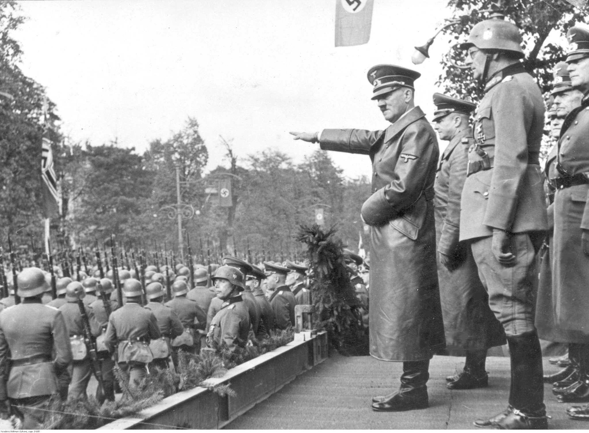

Speed and Surprise
The summary shows that early German victories depended on speed, coordination, and surprise. Air strikes, tanks, and infantry worked together to overwhelm opponents before they could respond effectively.
World War II in Europe
Nazi Germany expanded across Europe through rapid military campaigns. Blitzkrieg, territorial conquest, and coordinated attacks allowed German forces to seize land across much of Europe in a short period of time.
Big Picture
The summary shows that early German victories depended on speed, coordination, and surprise. Air strikes, tanks, and infantry worked together to overwhelm opponents before they could respond effectively.
Germany's expansion was shaped by more than battlefield success. The summary highlights the importance of iron ore, ports, supply lines, and strategic positioning in places like Norway and the North Atlantic.
The summary also shows that expansion created new pressures. Delays, long distances, logistics, and underestimating opponents became increasingly important as Germany pushed into more regions.
Interactive Timeline
Extended notes organized by what occurred, why it mattered, and key takeaways.
September 1939
On September 1, 1939, Germany invaded Poland and launched the war in Europe. German forces used Blitzkrieg, or "lightning war," which combined tanks, motorized troops, and aircraft to attack quickly and break through defenses before Poland could fully respond. The Luftwaffe bombed railways, bridges, and cities, while German troops pushed in from several directions. On September 17, the Soviet Union invaded from the east under the secret terms of the Nazi-Soviet Pact, leaving Poland trapped between two invading powers.
The invasion of Poland is widely seen as the official beginning of World War II because Britain and France declared war on Germany soon afterward. It also revealed how effective German modern warfare tactics could be against countries still relying on slower, more traditional methods of defense.
Poland showed the world how powerful Blitzkrieg could be in the early years of the war. It also demonstrated how international agreements, like the Nazi-Soviet Pact, could temporarily benefit aggressors while devastating smaller nations.

Military Strategy
Blitzkrieg means "lightning war." It was not just one weapon or one unit. It was a method of attacking fast, breaking defenses, and preventing the enemy from regrouping.
Many armies were prepared for slower trench-style fighting, so they were not ready for coordinated attacks that moved this quickly. Germany also concentrated force at key points, creating breakthroughs that could spread into deeper expansion.
In the summary, Blitzkrieg appears as the method behind Germany's early territorial gains. It helped German forces move rapidly, isolate enemy troops, and seize control before defenders could recover.
Germany in Control
By the summer of 1941, Germany appeared to hold the advantage in Europe. Poland had been conquered in September 1939. Denmark and Norway fell in April 1940. In May and June 1940, German forces defeated the Netherlands, Belgium, and France with remarkable speed. In April 1941, Germany expanded into Yugoslavia and Greece, and on June 22, 1941, it launched Operation Barbarossa, the large invasion of the Soviet Union. At this point, German influence stretched across much of Europe.
For the Allies, this was a deeply uncertain moment. France had collapsed in only six weeks, Britain remained under pressure, and Germany seemed capable of striking successfully in several regions of Europe. Large parts of the continent were occupied by Germany, controlled by its allies, or vulnerable to further attack. To many people at the time, Germany looked like the strongest military power in Europe. This is what makes the moment so important to study: if Germany appeared so powerful in 1941, how did the Allies eventually turn the war in their favor?
Quick Check